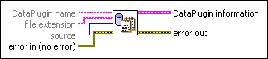

List DataPlugins VI
Owning Palette: Manage DataPlugins VIs
Requires: Base Development System
Lists all DataPlugins existing on the National Instruments website at ni.com/dataplugins or registered on the local computer. You also can use this VI to search for a DataPlugin that exists on the local computer or the National Instruments website.
 | Note Use the Register DataPlugin VI to register or install DataPlugins on the local computer. |

 Add to the block diagram Add to the block diagram |
 Find on the palette Find on the palette |